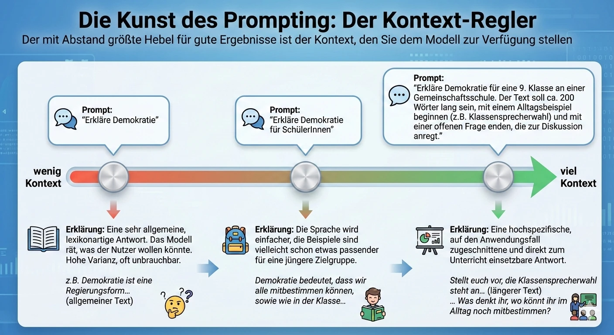
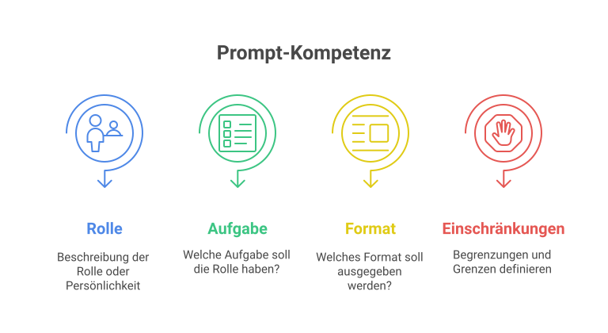

a) Chatbots und LLMs verstehen
Ein Chatbot, der auf einem LLM basiert (z.B. ChatGPT, Claude, Gemini, Copilot), ist kein Suchsystem. Er ist ein generatives System mit drei wichtigen Eigenschaften:
- Kontextfenster - Was im aktuellen Chat steht, ist „präsent". Alles davor: weg.
- Halluzinationen - Das Modell kann mit hoher Souveränität Falsches behaupten.
- Bias - Trainingsdaten bilden Sichtweisen ungleich ab.

- 🔍

Prompting für die neue Modellgeneration ab 2026
Die neuen Modelle folgen kurzen, klaren Anweisungen so gut wie nie zuvor. Lange, verschachtelte Mega-Prompts können das Ergebnis sogar verschlechtern. Anthropic gibt vier Tipps, die du sofort anwenden kannst:
- Hör auf, Romane zu schreiben. Kurze, klare Anweisungen schlagen lange, verschachtelte Prompts. Alte Mega-Prompts können die Antwortqualität sogar verschlechtern.
- Gib den Grund, nicht nur die Aufgabe. Statt „Schreib mir X" - kurz erklären: „Ich arbeite an [Ziel] für [Zielgruppe]. Die brauchen das, weil [Grund]. Vor dem Hintergrund: [Aufgabe]." Das Modell verbindet Aufgabe und Kontext, statt zu raten.
- Wirf ihm dein schwerstes Problem hin. Mini-Aufgaben unterfordern die neuen Modelle. Ihre Stärke liegt bei den langen, kniffligen Sachen - genau dem, was du seit Wochen vor dir herschiebst.
- Lass es einfach machen. Wenn die Infos reichen: weniger Hand-Holding, weniger Rückfrage-Schleifen. Das Modell soll die Aufgabe end-to-end durchziehen und am Ende ein fertiges Ergebnis liefern.
b) Projektbasiertes Lernen mit KI
KI wirkt am stärksten, wenn sie nicht Selbstzweck ist, sondern Werkzeug in einem echten Projekt. Bewährte Schritte:
- Frage - Authentisches Problem, das die Klasse interessiert.
- Plan - Welche Schritte? Wo hilft KI, wo nicht?
- Umsetzung - Iterativ, mit Reflexionsstops.
- Produkt - Eine konkrete Veröffentlichung (Plakat, Podcast, Video, Webseite).
- Reflexion - Was hat KI beigetragen? Was war eigene Leistung?
Fünf Fragen vor jedem KI-Einsatz
Bevor eine Aufgabe an ein LLM übergeben wird, lohnt ein kurzer Check mit diesen fünf Fragen. Sie helfen, die Aufgabe in ein Ampel-Schema einzuordnen - 🟢 unproblematisch, 🟡 vorsichtig mit Prüfung, 🔴 nicht ohne fachliche Begleitung.
-
Was ist der Kern der Aufgabe?
Geht es um Sprache, Stil oder kreative Ideen, springt die Ampel meist auf 🟢. Sobald Fakten oder Entscheidungen über Menschen im Spiel sind, eher 🟡 oder 🔴. -
Wie kritisch wären Fehler?
Ein Tippfehler im Aushang ist ärgerlich, aber reparabel (🟢/🟡). Eine falsche Diagnose oder ein irreführender Befund hat Folgen für eine Person - klar 🔴. -
Kann ich die Antwort realistisch prüfen?
Reichen Fachwissen und Zeit, um das Ergebnis vollständig gegenzulesen? Dann 🟡. Müsste blind vertraut werden, ist die Ampel 🔴. -
Brauche ich aktuelle oder externe Daten?
Liegt das Thema nach dem Wissensstichtag des Modells oder braucht es Live-Informationen? Dann nur mit Webzugriff oder Grounding - sonst ist das LLM das falsche Werkzeug. -
Erfordert die Aufgabe mehrschrittiges Denken?
Bei komplexen Problemen mit nachvollziehbarer Herleitung (Beweisführung, mehrstufige Analyse, Planung) lieber ein Reasoning-Modell wählen statt der Standard-Variante.
c) Interaktive Demonstrationen
Demos sind das didaktische Herzstück - sie machen abstrakte Funktionsweisen erlebbar.
KI-Blick
Bilderkennung mit Wahrscheinlichkeiten - perfekt zum Einstieg in maschinelles Sehen.
Teachable Machine
Eigene Mini-KIs trainieren mit Bild, Ton, Pose - in 10 Minuten.
Quick, Draw!
Google-KI rät, was gezeichnet wird - eindrücklich für GS und Sek I.
Miro Board KI-Magie
Visuelle Map zu allen Themen, ideal als Workshop-Hub.
d) LLMs und Prompting
Ein Large Language Model (LLM) ist kein Suchsystem und kein Allwissender, sondern ein Statistik-Werkzeug, das auf Basis sehr vieler Texte das nächste wahrscheinlichste Token berechnet. Die Qualität der Antwort hängt deshalb vor allem von einer Sache ab: vom Prompt. Wer klar fragt, bekommt klare Antworten - wer vage fragt, bekommt vage Antworten.
Was LLMs heute richtig gut können
- Umformulieren & Vereinfachen - Texte auf Niveaustufen anpassen, Fachsprache übersetzen.
- Strukturieren - Stichpunkte sortieren, Mindmaps generieren, Lückentexte erzeugen.
- Variieren - Aufgaben mit verschiedenen Schwierigkeitsgraden in Sekunden.
- Brainstormen - Ideen, Perspektiven, Gegenargumente liefern.
- Übersetzen - Sprachen, Register, Zielgruppen.
Was LLMs nicht können
- Wahrheit garantieren - Halluzinationen sind eine Funktion, kein Bug.
- Aktuelle Ereignisse kennen - ohne Web-Anbindung endet das Wissen am Trainingsstichtag.
- Sich erinnern - außerhalb des Kontextfensters ist alles weg.
- Werten oder verantworten - das bleibt menschliche Aufgabe.
Die 5 Bausteine eines guten Prompts
1. Rolle
Wer soll die KI sein? „Du bist erfahrene:r Deutschlehrer:in in Klasse 7" liefert andere Antworten als die leere Anfrage.
2. Ziel
Was genau soll am Ende dastehen? Aufgabenblatt? Feedback? Stichpunktliste? Quizfragen?
3. Kontext
Lerngruppe, Vorwissen, Thema, Zeit, Heterogenität - alles, was die KI nicht selbst wissen kann.
4. Format
Tabelle? Markdown? Drei Absätze? JSON? Klare Vorgaben sparen Nacharbeit.
5. Grenzen
Was darf NICHT passieren? Keine Klarnamen, keine Lösungen vorab, keine Floskeln. Negationen wirken.
+ Beispiel
Ein Mini-Beispiel im Prompt („so soll es aussehen…") wirkt als Schablone und führt das Modell.
Prompt-Beispiel: differenzierte Aufgaben in Sekunden
Iteratives Prompting - der eigentliche Hebel
Der erste Prompt ist selten der beste. Bewährte Folgeaktionen:
- „Mach mir drei Varianten." - lässt das Modell breiter denken.
- „Was an deiner Antwort ist unsicher?" - macht Halluzinationsrisiko sichtbar.
- „Erkläre mir, wie du darauf kommst." - prüft die Argumentation.
- „Schreibe es um, ohne dass es nach KI klingt." - hebt sprachliche Eigenart.
- „Stell mir 3 Rückfragen, bevor du startest." - zwingt das Modell zur Klärung.
Vom Prompter zur Prompterin
Eigene Erfahrung ist der wichtigste Lehrer. Drei Routinen helfen:
- Sammeln: Funktionierende Prompts in einem persönlichen „Prompt-Repertoire" (Datei, Wiki) ablegen.
- Teilen: Im Kollegium gegenseitig zeigen, was funktioniert hat - inklusive der Fehlversuche.
- Reflektieren: Nach jeder Nutzung kurz festhalten, was die KI beigetragen hat und was Eigenleistung war.

Tools-Übersicht
- 🤖ChatGPT
- 🤖Claude
- 🤖Gemini
- 🤖Microsoft Copilot
- 🎓fobizz
- 🎨Adobe Firefly / Midjourney / DALL·E
- 🧑🏫
- 🧞
- 🔬
- 🪄
- 🪐
- ⌨️
Tool-Verzeichnisse - KI-Tools entdecken
Drei kuratierte Verzeichnisse, in denen sich neue KI-Tools entdecken, vergleichen und filtern lassen. Besonders nützlich, wenn man für eine konkrete Aufgabe nach Alternativen sucht oder den Markt überblicken will.
- 🔎
- 📚
- 🇩🇪
Eine Weiterentwicklung: Reasoning-Modelle für komplexes Denken
Neben den klassischen Chat-Modellen gibt es eine zweite Generation: Reasoning-Modelle. Sie sind darauf trainiert, ein Problem nicht in einem Rutsch zu beantworten, sondern es zunächst zu zerlegen, Zwischenschritte zu planen und das eigene Ergebnis zu prüfen. Anbieter nennen das oft „Thinking"-Modus (z.B. GPT-5 Thinking, Claude Sonnet/Opus mit Extended Thinking, Gemini Deep Think).
Standard-Chat-Modell
- Optimierungsziel: flüssige, plausible Konversation
- Vorgehen: Zwischenschritte oft implizit oder übersprungen
- Training: lernt aus Dialogen
- Stärke: schnell, sprachstark, alltagstauglich
Reasoning-Modell
- Optimierungsziel: korrekte, nachvollziehbare Lösungswege
- Vorgehen: zerlegt Probleme, plant, überprüft Zwischenschritte
- Training: lernt aus Beispielen mit expliziten Gedankengängen („Chain of Thought")
- Stärke: Logik, Mehrschritt-Mathe, Beweisführung, Code-Debugging
Schul-Beispiel: Gruppen für ein Projekt einteilen
In einer Klasse mit 27 Schüler:innen sollen Projektgruppen zu jeweils 4 oder 5 Personen gebildet werden. Zwei Schüler:innen wollen das Projekt aus didaktischen Gründen allein bearbeiten. Wie viele Gruppen werden gebraucht und wie sind sie verteilt?
⚡ Standard-Antwort
„Bei 27 Schüler:innen ergeben sich 5 Gruppen zu je 5 Personen und 2 Einzelarbeiten."
Klingt plausibel - 5×5+2 = 27. Aber: das ist die schnelle, oberflächliche Antwort. Stimmt sie wirklich für die Vorgabe „4er und 5er gemischt, möglichst gleich groß"?
⚙ Reasoning-Antwort
- 27 Schüler:innen insgesamt, 2 wollen allein arbeiten → 25 Personen sind übrig.
- Bei reinen 5er-Gruppen: 25 ÷ 5 = 5 → ergibt 5 Gruppen.
- Bei Mischung 4er/5er: 5×5 = 25 ✓, oder 3×5 + 2×4 = 23 ✗ - die reine 5er-Lösung passt exakt.
- Lösung: 2 Einzelarbeiten + 5 Gruppen zu je 5 Personen.
Wann lohnt sich ein Reasoning-Modell?
- Mehrstufige Mathe-/Logik-Aufgaben (z.B. Wahrscheinlichkeit, Stochastik, Bewertungsschlüssel berechnen)
- Schreibprozesse mit Argumentationsbogen (z.B. Erörterung planen, Gegenargumente abwägen)
- Code-Probleme, die nicht in drei Zeilen zu lösen sind
- Planungsaufgaben mit vielen Randbedingungen (Stundenplan, Stationenarbeit, Wandertag-Logistik)
Für schnelle Umformulierungen, Brainstorming oder Routine-Texte ist das klassische Chat-Modell weiter erste Wahl - schneller und günstiger.
Der Eignungs-Check: Wann ist ein LLM das richtige Werkzeug?
Die fünf Fragen aus Abschnitt b) lassen sich für den Schulalltag in drei klare Eignungsstufen verdichten:
Gut geeignet
Aufgaben, bei denen Sprache, Struktur und Ideenvielfalt im Vordergrund stehen - und einzelne Fehler folgenlos bleiben.
- Textentwürfe erstellen, umschreiben, kürzen.
- Ideen für Unterrichtseinstiege sammeln (Brainstorming).
- Komplexe Sachverhalte zur Vereinfachung erklären lassen.
- Materialentwürfe wie Lückentexte oder Fallbeispiele generieren.
Nur mit Auflagen & Prüfung
Aufgaben mit Faktenanteil, die sich mit vertretbarem Aufwand verlässlich gegenprüfen lassen.
- Zusammenfassungen von Fachtexten (Original muss vorliegen).
- Recherche-Anstöße (jeder Fakt muss extern verifiziert werden).
- Übungsaufgaben erstellen (Lösungen müssen geprüft werden).
Auflagen: Reasoning-Modell, Grounding/Tool Use aktivieren, Quellen explizit anfordern.
Ungeeignet
Aufgaben mit hohem Risiko - mit Fehlerfolgen, die nicht prüfbar sind oder die ein originär menschliches Urteil verlangen.
- Notenfindung, Leistungsbeurteilungen, Gutachten.
- Individuelle psychologische oder diagnostische Einschätzungen.
- Rechtliche, medizinische oder sicherheitsrelevante Entscheidungen.
Lernideen mit KI
💡 Workshop 05 - Lernideen
Praktische Mini-Projekte für jede Stufe.
📚 Klassen-Geschichtenwerkstatt
Klasse erfindet eine Geschichte mit drei Held:innen. Die Lehrkraft generiert Illustrationen und liest am Ende vor.
🎙 Mini-Podcast „Wie funktioniert …?"
Klasse erstellt einen 5-Minuten-Erklär-Podcast zu einem MINT-Thema. KI hilft beim Skript, Sprecher:in bleibt menschlich.
🧑💻 Custom GPT für ein Schulthema bauen
🎨 Mein KI-Bildexperiment
Du beschreibst ein Wunschbild in drei Versuchen und beobachtest, wie sich Ergebnisse verändern.
🎯 KI-gestütztes Mini-Projekt
Die Landkarte des Prompting
Zwei Dimensionen entscheiden über die Qualität eines Prompts: Wie klar weißt du, was du am Ende willst (Zielklarheit) - und wie viel Hintergrundwissen gibst du dem Modell mit (Kontexttiefe)? Daraus ergeben sich vier Felder, die jeweils einen anderen Arbeits-Modus beschreiben.
Die geführte Exploration
Noch kein klares Endprodukt im Kopf - aber du gibst dem Modell viel Kontext (z.B. einen langen Text) und bittest um Analyse, Zusammenfassung oder Ideenfindung.
Modus: effektive ExplorationDer Sweet Spot
Klares Ziel und reichhaltiger Kontext. Hier entstehen die präzisesten und nützlichsten Ergebnisse - genau dort willst du beim Arbeiten landen.
Modus: produktive ProduktionDas Laberland
Wenig Ziel, wenig Kontext. Ein guter Ort zum Anfangen - etwa um ein Thema überhaupt erst abzustecken oder erste Ideen zu sammeln. Verweildauer: kurz.
Modus: ExplorationDie Frust-Zone
Klares Ziel, aber zu wenig Kontext geliefert. Du weißt, was du willst - das Modell liefert nicht, weil ihm die entscheidenden Informationen fehlen. Führt zu erfolglosen Neuversuchen.
Modus: ineffektive ProduktionRessourcen
- 🧰
- 🌐